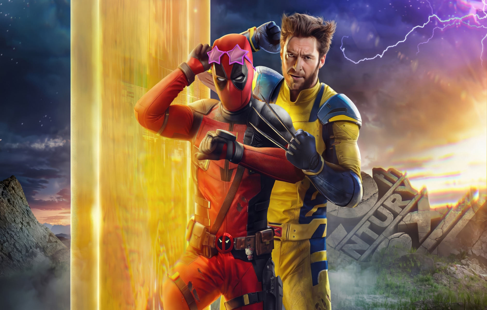

Critica de DeadPool & Wolverine (Sem Spoiler)
"Deadpool & Wolverine" é uma colisão de personagens icônicos do universo Marvel, trazendo um tom irreverente e repleto de ação para a tela grande. Desde o início, o filme mergulha os espectadores em um frenesi de humor ácido, violência estilizada e química única entre os protagonistas. A relação entre Deadpool e Wolverine é o ponto focal da narrativa, oferecendo um contraste interessante entre o cinismo desenfreado de Deadpool e a natureza mais sombria e reservada de Wolverine. No entanto, apesar de sua promessa inicial, o filme às vezes se perde em sua própria extravagância, sacrificando o desenvolvimento de personagens em favor de piadas rápidas e cenas de ação exageradas.
A química entre Ryan Reynolds como Deadpool e Hugh Jackman como Wolverine é indiscutível, elevando o filme com sua dinâmica envolvente e trocas de diálogo afiadas. Reynolds mais uma vez se destaca como o mercenário tagarela, trazendo sua marca registrada de humor autodepreciativo e sarcasmo que os fãs adoram. Da mesma forma, Jackman incorpora perfeitamente a fúria contida e a melancolia de Wolverine, criando momentos de verdadeira intensidade emocional em meio ao caos cômico ao redor.
Visualmente, o filme é uma festa para os olhos, com sequências de ação habilmente coreografadas e efeitos especiais impressionantes que dão vida ao mundo dos quadrinhos. A direção de arte capta a estética única dos quadrinhos de Deadpool e Wolverine, transportando os espectadores para um universo vibrante e cheio de energia. No entanto, em meio a toda essa extravagância, o enredo muitas vezes parece desconexo e carece de coesão, deixando algumas pontas soltas e subtramas subdesenvolvidas.
A violência gráfica e o humor adulto são marcas registradas do universo Deadpool, e este filme não decepciona nesse aspecto. No entanto, às vezes, as piadas parecem forçadas e gratuitas, sacrificando a sutileza em favor do choque. Isso pode alienar alguns espectadores que procuram uma experiência mais equilibrada entre comédia e drama. Além disso, o ritmo frenético do filme pode ser cansativo em alguns momentos, tornando difícil acompanhar a história em meio a tantas reviravoltas e piadas rápidas.
Em última análise, "Deadpool & Wolverine" é um filme que vai agradar aos fãs ávidos de quadrinhos, oferecendo uma dose saudável de ação, humor e nostalgia. No entanto, sua falta de coesão narrativa e seu foco excessivo em piadas rápidas podem deixar alguns espectadores desejando por uma abordagem mais equilibrada. Mesmo assim, a química entre Reynolds e Jackman, combinada com as sequências de ação visualmente impressionantes, torna este filme uma diversão garantida para os aficionados por super-heróis.
A trilha sonora também merece destaque, complementando perfeitamente as cenas de ação e os momentos emocionais do filme. Com uma mistura de músicas originais e hits conhecidos, a música adiciona camadas de profundidade à experiência cinematográfica, ajudando a estabelecer o tom e o ritmo de cada cena. A escolha das músicas reflete habilmente o estilo e a personalidade dos personagens principais, adicionando uma dimensão extra ao seu desenvolvimento.
No entanto, apesar de seus pontos fortes, "Deadpool & Wolverine" pode deixar alguns fãs divididos quanto ao seu tratamento dos personagens e ao enredo em si. Enquanto alguns podem apreciar a abordagem ousada e irreverente, outros podem sentir que o filme não respeita completamente a essência dos personagens e suas histórias de origem. A decisão de mesclar diferentes elementos dos quadrinhos pode resultar em uma narrativa confusa para aqueles menos familiarizados com o material de origem.
Em última análise, "Deadpool & Wolverine" é um filme que entrega o que promete: ação, humor e uma dose saudável de fan service para os fãs de quadrinhos. Embora não seja isento de falhas, sua energia contagiante e o talento dos seus principais protagonistas garantem uma experiência divertida e empolgante para aqueles que procuram uma aventura de super-herói fora do comum.